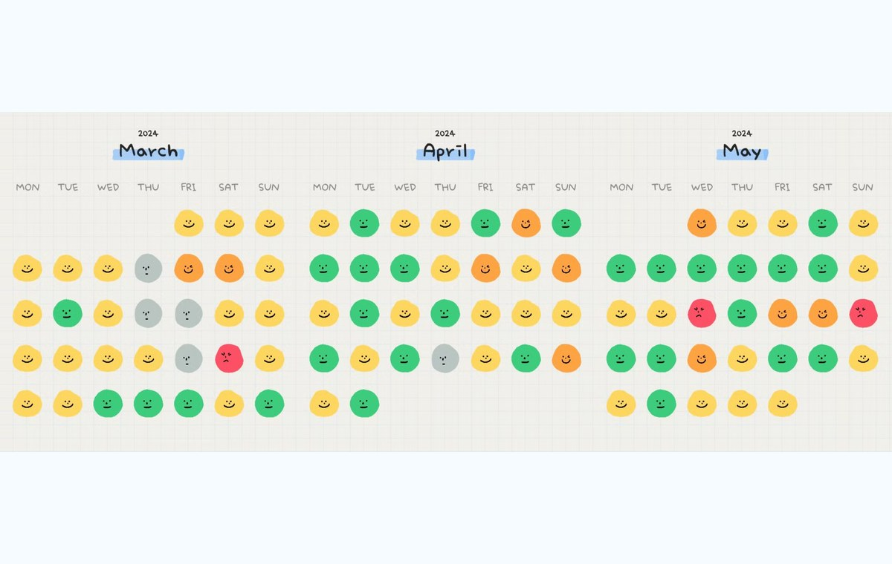

Data Diary of Mood
A visual diary capturing mood trends across months. The graphic turns daily emotional states into a compact calendar rhythm, making shifts and repeated patterns easier to notice.

A visual diary capturing mood trends across months. The graphic turns daily emotional states into a compact calendar rhythm, making shifts and repeated patterns easier to notice.
